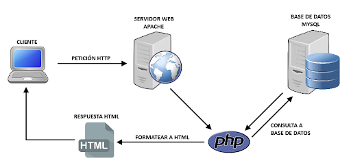

Definición y fundamentos
La tecnología cliente-servidor es un modelo de arquitectura de red que separa las responsabilidades entre los "clientes" y los "servidores". En este modelo, el cliente es el dispositivo o la aplicación que realiza solicitudes para acceder a recursos o servicios, mientras que el servidor es el sistema que procesa esas solicitudes y proporciona los recursos o servicios solicitados. Este enfoque centralizado permite una gestión más eficiente de los recursos, optimiza la comunicación en la red y mejora la escalabilidad del sistema.
Un ejemplo clásico de cliente-servidor es el uso de un navegador web (cliente) para acceder a un sitio web alojado en un servidor remoto. El navegador solicita los datos (páginas web, imágenes, etc.) y el servidor responde enviando los archivos solicitados, que luego son renderizados por el cliente para mostrarse en la pantalla del usuario.
Historia y Evolución
El modelo cliente-servidor surgió como una evolución de los sistemas centralizados en los años 60 y 70, cuando las redes de computadoras comenzaron a expandirse y se hizo evidente la necesidad de dividir las tareas entre diferentes dispositivos. En los primeros días de la computación, las arquitecturas eran centralizadas, con computadoras mainframe que realizaban todas las tareas y los usuarios interactuaban con terminales tontas que simplemente mostraban la información.
Con el aumento de la potencia de procesamiento de las computadoras personales y la aparición de redes de área local (LAN), el concepto de cliente-servidor ganó popularidad en los años 80 y 90. A medida que internet creció, el modelo cliente-servidor se convirtió en la base de la web moderna y la infraestructura empresarial.
Componentes Básicos del Modelo Cliente-Servidor
El modelo cliente-servidor se basa en la interacción entre varios componentes, que trabajan en conjunto para proporcionar servicios a los usuarios:
Cliente: Es la interfaz o aplicación que el usuario final utiliza para realizar solicitudes.
Los clientes pueden ser aplicaciones web, móviles, o de escritorio, y suelen ser responsables de presentar la información y permitir la interacción del usuario.
Ejemplos: navegadores web, aplicaciones de mensajería, software de correo electrónico.
Servidor: Es el componente central que almacena, gestiona y sirve los datos solicitados por los clientes.
Los servidores pueden manejar diferentes tipos de solicitudes, como acceso a bases de datos, envío de correos electrónicos, procesamiento de transacciones, etc.
Ejemplos: servidores web, servidores de bases de datos, servidores de correo.
Red: Es el canal a través del cual los clientes y servidores se comunican.
Puede ser una red local (LAN), una red de área extensa (WAN) o internet.
La eficiencia de la red es crucial para el rendimiento del sistema cliente-servidor.
Middleware: Es el software que actúa como intermediario entre el cliente y el servidor, facilitando la comunicación y el intercambio de datos.
Proporciona servicios como autenticación, enrutamiento de solicitudes, y traducción de protocolos.
Ejemplos: servidores de aplicaciones, plataformas de API.
Gráfico Explicativo
Este gráfico muestra la interacción básica entre un cliente, que realiza solicitudes, y un servidor, que responde a esas solicitudes proporcionando los recursos o servicios adecuados. El cliente y el servidor se comunican a través de una red, y el middleware facilita esa interacción.